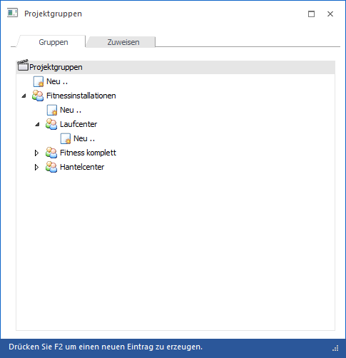
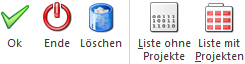

Über den Menüpunkt…
1 WinLine FAKT
1 Stammdaten
1 Projektverwaltung
1 Projektgruppen
… können bis zu 5stufige Projektgruppen angelegt und in weiterer Folge bei Verkaufschancen bzw. Projekten hinterlegt werden. Die Projektgruppe dient zur Zusammenfassung bzw. zur Gliederungen von Projekten.

Das Fenster ist in die folgenden Register unterteilt, welche in den folgenden Kapiteln beschrieben werden:
ü Gruppen
ü Zuweisen
Buttons

Ø Ok
Abhängig vom Register werden unterschiedliche Daten gespeichert
ü Register "Gruppen"
Durch Anwahl
des Buttons "Ok" bzw. der Taste F5 werden die editierten bzw. neu angelegten
Projektgruppen gespeichert.
ü Register "Zuweisen"
Durch
Anwahl des Buttons "Ok" bzw. der Taste F5 werden die getroffenen und aktivierten
Zuweisungen gespeichert. Anschließend wird die Tabelle gemäß den Einstellungen
neu gefüllt.
Ø Ende
Durch Anwahl des Buttons "Ende" bzw. der Taste ESC wird das Fenster geschlossen und alle nicht gespeicherten Eingaben verworfen.
Ø Löschen (nur im Register "Gruppen" anwählbar)
Mit Hilfe des Buttons "Löschen" können Projektgruppen gelöscht werden.
Hinweis
Vor dem Löschen wird geprüft, ob die zu löschende Projektgruppe noch bei einem Datensatz hinterlegt ist. Ist dieses der Fall, so wird eine entsprechende Meldung ausgegeben.
Wenn eine Projektgruppe mit mehreren Ebenen gelöscht werden soll, so muss mit der untersten Ebene begonnen werden. Erst wenn alle Ebenen gelöscht sind, kann auch die "Hauptgruppe" gelöscht werden
Ø Liste ohne Projekte (nur im Register "Gruppen" anwählbar)
Es wird eine Liste alle Projektgruppen am Bildschirm ausgegeben.
Ø Liste mit Projekten (nur im Register "Gruppen" anwählbar)
Es wird eine Liste alle Projektgruppen, samt der zugeordneten Projekte, am Bildschirm ausgegeben.